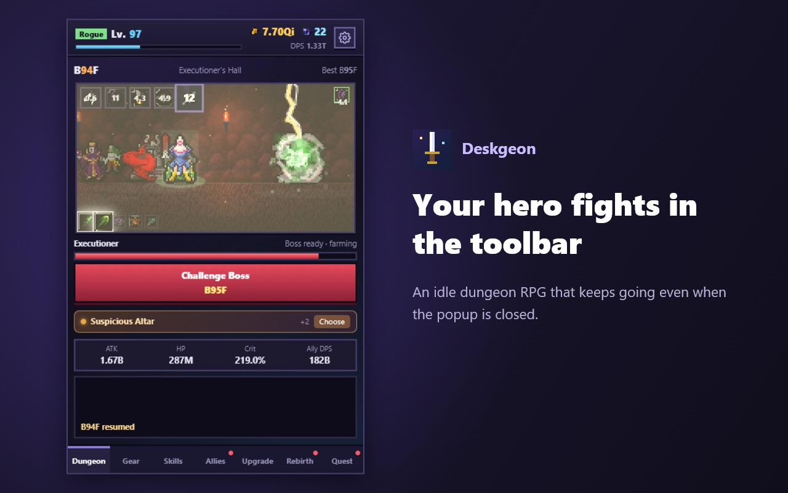
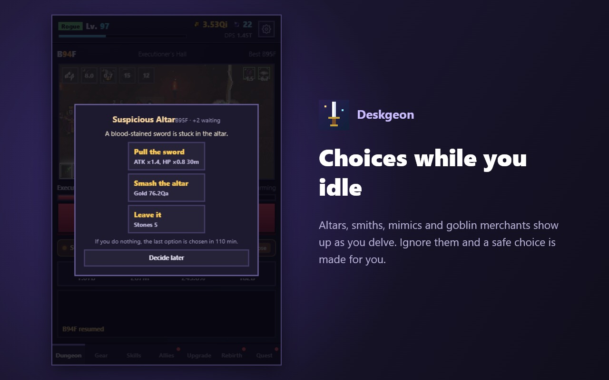
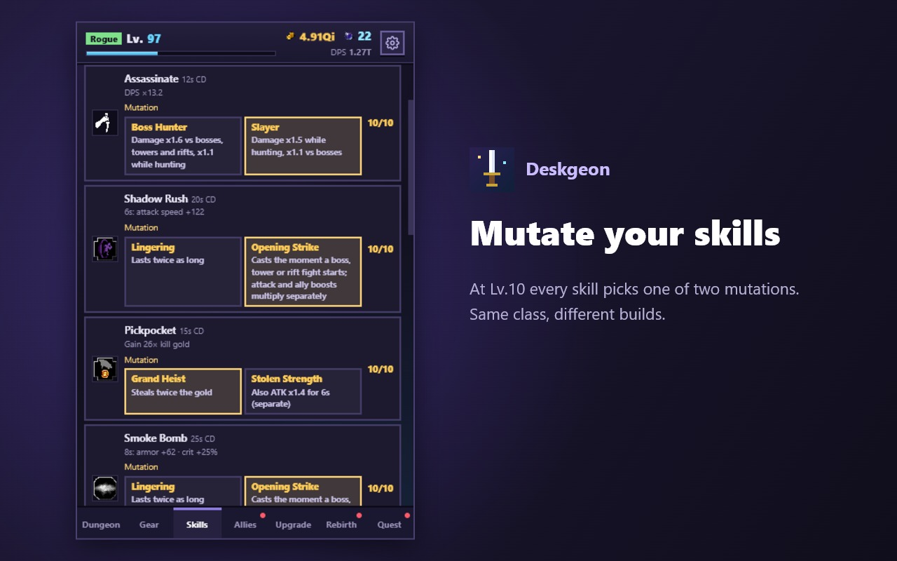
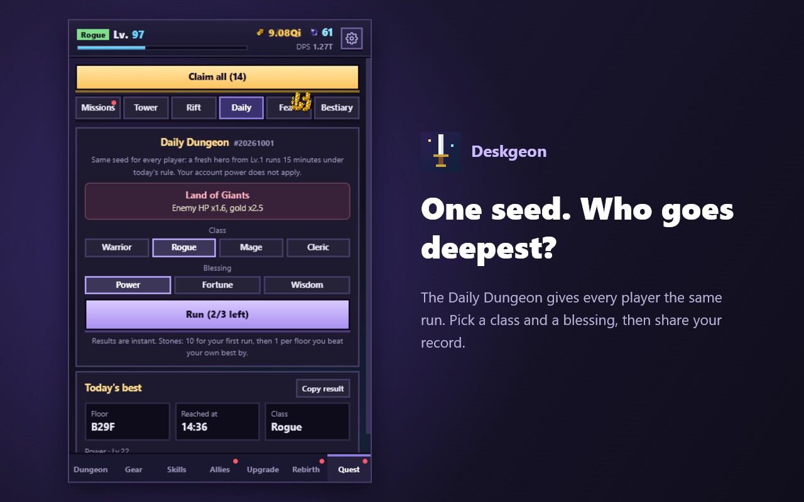
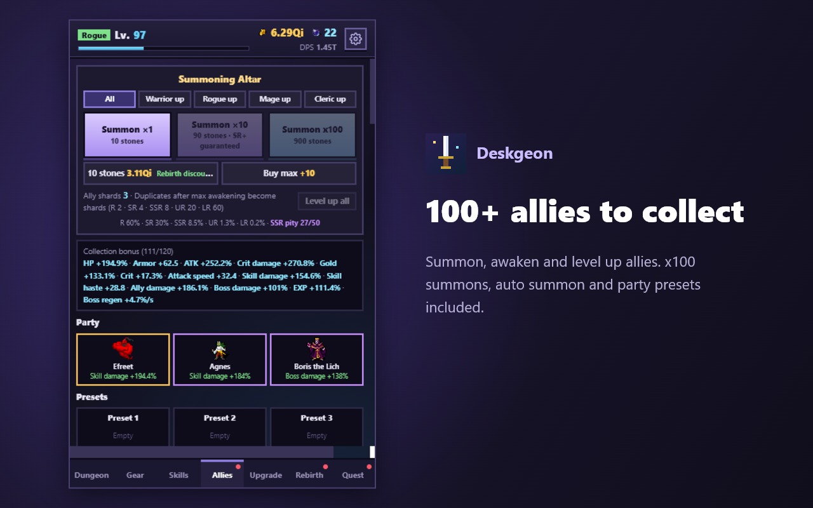

Deskgeon
DeskgeonDeskgeon
Idle Dungeon RPG for Chrome
A pixel hero that lives in your browser toolbar and keeps delving while you work.
툴바에 사는 도트 용사 · 일하는 동안에도 던전을 내려가는 방치형 RPG
Add to Chrome — Free Chrome · Edge · Whale · Brave and other Chromium browsers · No ads, no tracking




What is Deskgeon?
Deskgeon is a free idle RPG that runs as a Chrome extension. Open the popup and your hero is already fighting through the dungeon. Close it and the adventure goes on: come back after a meeting to collect gold, loot and the floors you cleared. A few seconds between tasks is enough to equip new gear, learn a skill or summon an ally. If you want depth, there are class builds, party composition, legendary unique effects, rebirth and reincarnation.
4 classes, 40 skills
Warrior, Rogue, Mage and Cleric. Max every skill, then pour leftover points into unlimited Mastery.
100+ allies
Five rarities, all the way up to Legendary. Pity, pickup banners, awakening, ally levels, x100 and auto summon.
Loot worth chasing
8 gear slots, random affixes, 16 legendary unique effects, slot enhancement and set bonuses.
Three towers
Endless, Storm (burst damage) and Iron (survival) towers, three tries each per day.
Dimensional Rift and Runes
Clear rift waves for runes that are never lost, even through rebirth and reincarnation.
Crit beyond 100%
Overcapped crit chance rolls multi-tier critical hits. Skill haste and armor scale without hard caps.
Skill Mutations
At Lv.10 every skill offers a choice of two mutations: boss hunter or slayer, lingering or opening strike. Same class, different builds.
Dungeon events
Altars, wandering smiths, mimics and goblin merchants appear while you idle. Pick an option, or a safe default is chosen for you.
Signature boss loot
Every zone boss has its own Legendary unique, with a pity counter that guarantees it.
Daily Dungeon
Everyone gets the same seeded run from Lv.1. Pick a class and blessing, get your result instantly and share it.
Starter guide
A 12-step guide with rewards walks new players through the basics, plus an in-game "How to play".
Rebirth and reincarnation
Honor, relics and karma make every new run faster. 26 zones, a boss every 5 floors, endless loops.
Plays while you are away
Up to 12 hours of offline progress and automation that unlocks as you go.
Your saves, your account
Sync through Chrome Sync or your own Google Drive app folder, plus save codes and auto backups.
Deskgeon - 방치형 던전 RPG 크롬 확장 게임
Deskgeon(데스크젼)은 크롬 툴바에서 돌아가는 무료 방치형 RPG예요. 팝업을 열면 용사가 이미 던전을 누비고 있고, 닫아도 모험은 계속돼요. 회의를 마치고 돌아오면 그동안 번 골드와 전리품, 내려간 층을 확인하세요.
- 4가지 직업, 40가지 스킬, 스킬을 다 찍은 뒤의 마스터리
- 5등급 100명 이상의 동료, 천장·픽업·각성·동료 레벨, 100회·연속 소환
- 8부위 장비, 전설 고유 효과 16종, 부위 강화와 세트 효과
- 무한의 탑·폭풍의 탑·강철의 탑, 하루 3번씩 도전
- 차원 균열과 환생·윤회에도 사라지지 않는 룬
- 치명타 100% 초과 시 다단 치명타, 상한 없는 스킬 가속과 방어력
- Lv.10 스킬마다 고르는 스킬 변이, 방치 중 선택지가 생기는 던전 이벤트
- 구역 보스마다 천장이 있는 전용 전설 장비
- 모두가 같은 시드로 겨루는 오늘의 던전과 결과 공유
- 보상이 있는 초보자 가이드와 게임 설명
- 환생·유물·윤회, 26개 구역과 끝없는 반복
- 최대 12시간 오프라인 진행, 진행할수록 열리는 자동화
- 크롬 동기화 또는 내 구글 드라이브로 세이브 동기화
日本語: ツールバーに住むドット勇者の放置系ダンジョンRPG（無料のChrome拡張機能）。
简体中文：住在浏览器工具栏里的像素勇者，免费放置类地下城 RPG Chrome 扩展。
Privacy
No ads, no tracking, no servers. Saves stay in your browser, your Chrome Sync storage, or (only if you connect it) a hidden app folder in your own Google Drive. See the privacy policy.